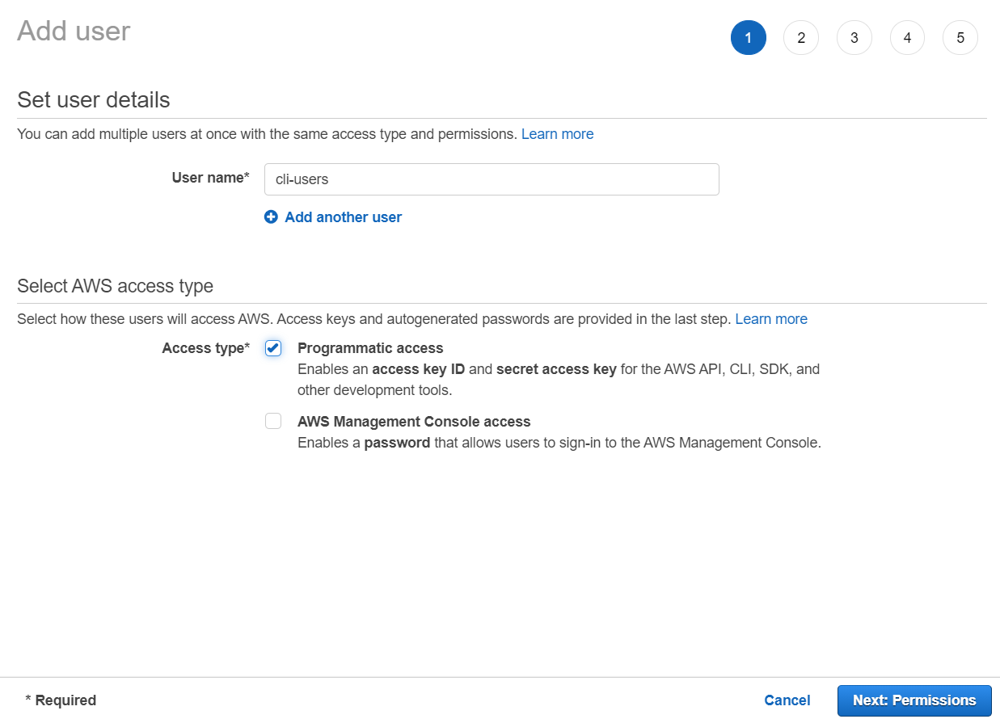
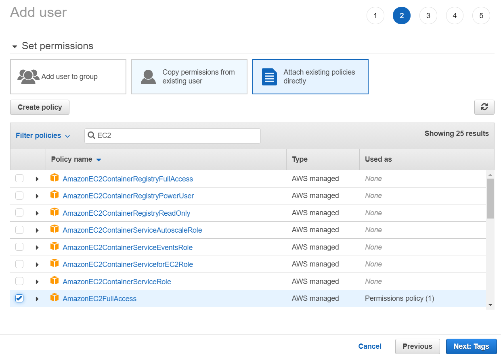
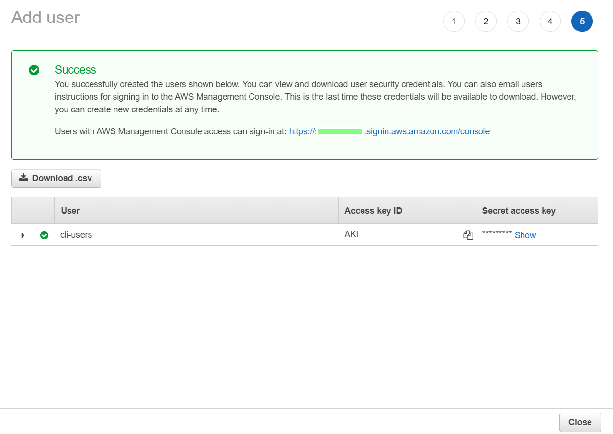

「最小限の特権を認める」とあるように、
本来は必要最低限のポリシーで運用を行うべきですが、
今回はオペレーションの都合上、権限が幅広いものを提示しています。
arn:aws:iam::aws:policy/AdministratorAccess
arn:aws:iam::aws:policy/AmazonEC2FullAccess
前述のIAM Policyをアタッチする形でアクセスキーを発行する。



未インストールの場合は、以下より取得してください。
> $PSVersionTable
Name Value
---- -----
PSVersion 5.1.19041.1023
PSEdition Desktop
PSCompatibleVersions {1.0, 2.0, 3.0, 4.0...}
BuildVersion 10.0.19041.1023
CLRVersion 4.0.30319.42000
WSManStackVersion 3.0
PSRemotingProtocolVersion 2.3
SerializationVersion 1.1.0.1
>
> aws --version
aws-cli/2.2.5 Python/3.8.8 Windows/10 exe/AMD64 prompt/off
>
> aws configure --profile cli-users
AWS Access Key ID [None]: AKI********
AWS Secret Access Key [None]: ********
Default region name [None]: ap-northeast-1
Default output format [None]: json
>
> aws sts get-caller-identity --profile cli-users
{
"UserId": "AID******",
"Account": "9999999999",
"Arn": "arn:aws:iam::9999999999:user/cli-users"
}
>
自分自身のAWSアカウントIDがオーナーとなっているAMIを確認するためのコマンド
$AccountID=aws sts get-caller-identity --profile cli-users --output text --query Account
aws ec2 describe-images --query 'Images[].[{ImageId:ImageId},{Description:Description},{Status:State}]' --owners $AccountID --output yaml --profile cli-users
> $AccountID=aws sts get-caller-identity --profile cli-users --output text --query Account
> aws ec2 describe-images --query 'Images[].[{ImageId:ImageId},{Description:Description},{Status:State}]' --owners $AccountID --output yaml --profile cli-users
- - ImageId: ami-******
- Description: sample
- Status: available
>
EC2インスタンスの情報を確認するためのコマンド
aws ec2 describe-instances --query 'Reservations[*].Instances[*].[{Instance:InstanceId}, {State:State.Name},{PublicIpAddress:PublicIpAddress},{PrivateIpAddress:PrivateIpAddress},{VolumeName:BlockDeviceMappings[*].DeviceName},{VolumeId:BlockDeviceMappings[*].Ebs.VolumeId},{ImageId:ImageId}]' --output yaml --profile cli-users
> aws ec2 describe-instances --query 'Reservations[*].Instances[*].[{Instance:InstanceId}, {State:State.Name},{PublicIpAddress:PublicIpAddress},{PrivateIpAddress:PrivateIpAddress},{VolumeName:BlockDeviceMappings[*].DeviceName},{VolumeId:BlockDeviceMappings[*].Ebs.VolumeId},{ImageId:ImageId}]' --output yaml --profile cli-users
- - - Instance: i-******
- State: running
- PublicIpAddress: ******
- PrivateIpAddress: ******
- VolumeName:
- /dev/xvda
- VolumeId:
- vol-******
- ImageId: ami-******
>
EBSスナップショットを確認するためのコマンド
$AccountID=aws sts get-caller-identity --profile cli-users --output text --query Account
aws ec2 describe-snapshots --owner-ids $AccountID --output yaml --profile cli-users --query 'Snapshots[*].[SnapshotId,VolumeId,VolumeSize,State,Progress,StartTime]'
> aws ec2 describe-snapshots --owner-ids $AccountID --output yaml --profile cli-users --query 'Snapshots[*].[SnapshotId,VolumeId,VolumeSize,State,Progress,StartTime]'
- - snap-******
- vol-******
- 8
- completed
- 100%
- '2021-07-12T13:28:04.998000+00:00'
>
特定のリソースに付与しているTagを確認するためのコマンド
$target="i-***/vol-****"
aws ec2 describe-tags --filters "Name=resource-id ,Values=$target" --profile cli-users
> $target="i-***"
> aws ec2 describe-tags --filters "Name=resource-id ,Values=$target" --profile cli-users
{
"Tags": [
{
"Key": "Name",
"ResourceId": "i-******",
"ResourceType": "instance",
"Value": "********"
}
]
}
EC2インスタンスからAMIを作成するためのコマンド
$aminame="backup-images"
$instanceid="i-******"
$rebootops="--no-reboot/--reboot"
aws ec2 create-image --name $aminame --instance-id $instanceid --profile cli-users $rebootops
> $aminame="backup-images"
> $instanceid="i-******"
> $rebootops="--no-reboot"
> aws ec2 create-image --name $aminame --instance-id $instanceid --profile cli-users $rebootops
{
"ImageId": "ami-******"
}
>
EBSスナップショットを取得するコマンド
$volid="vol-******"
aws ec2 create-snapshot --volume-id $volid --profile cli-users
> $volid="vol-******"
> aws ec2 create-snapshot --volume-id $volid --profile cli-users
{
"Description": "",
"Encrypted": false,
"OwnerId": "******",
"Progress": "",
"SnapshotId": "snap-******",
"StartTime": "2021-07-12T14:11:43+00:00",
"State": "pending",
"VolumeId": "vol-******",
"VolumeSize": 8,
"Tags": []
}
>
特定のリソースに対してTagをつけるコマンド
$target="i-***/vol-***"
aws ec2 create-tags --resources $target --tags 'Key=\"[Group]\",Value=test' --profile cli-users
> aws ec2 create-tags --resources $target --tags 'Key=\"[Group]\",Value=test' --profile cli-users
>
> aws ec2 describe-tags --filters "Name=resource-id ,Values=$target" --profile cli-users
{
"Tags": [
{
"Key": "Name",
"ResourceId": "i-******",
"ResourceType": "instance",
"Value": "******"
},
{
"Key": "[Group]",
"ResourceId": "i-******",
"ResourceType": "instance",
"Value": "test"
}
]
}
>
EC2インスタンスを停止するためのコマンド
$instancelid="i-******"
aws ec2 stop-instances --instance-ids $instancelid --profile cli-users
> $instancelid="i-******"
> aws ec2 stop-instances --instance-ids $instancelid --profile cli-users
{
"StoppingInstances": [
{
"CurrentState": {
"Code": 64,
"Name": "stopping"
},
"InstanceId": "i-******",
"PreviousState": {
"Code": 16,
"Name": "running"
}
}
]
}
>
EC2インスタンスを起動するためのコマンド
$instancelid="i-******"
aws ec2 start-instances --instance-ids $instancelid --profile cli-users
> $instancelid="i-******"
> aws ec2 start-instances --instance-ids $instancelid --profile cli-users
{
"StartingInstances": [
{
"CurrentState": {
"Code": 0,
"Name": "pending"
},
"InstanceId": "i-******",
"PreviousState": {
"Code": 80,
"Name": "stopped"
}
}
]
}
>